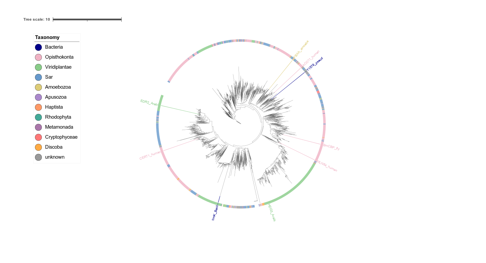
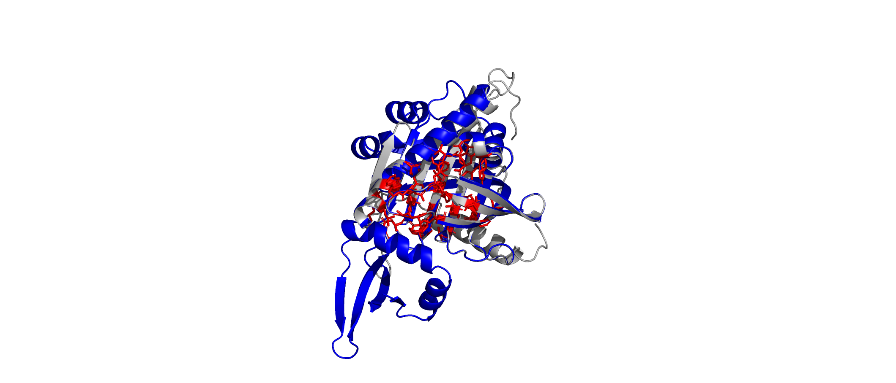
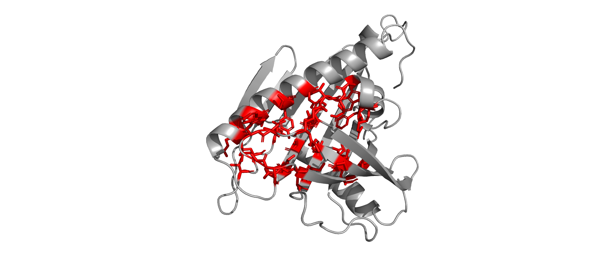
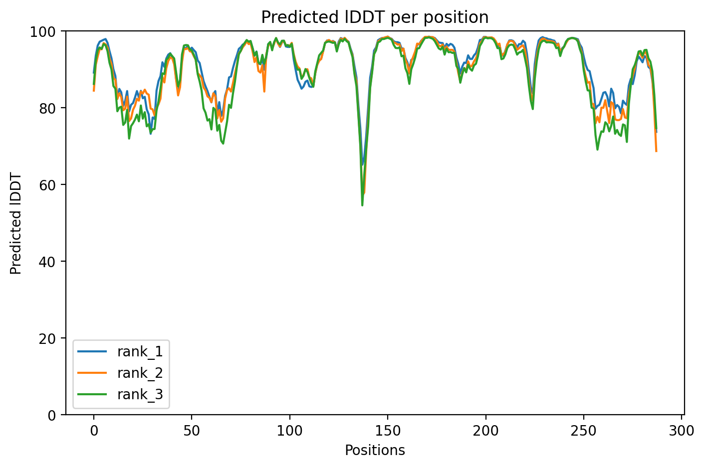
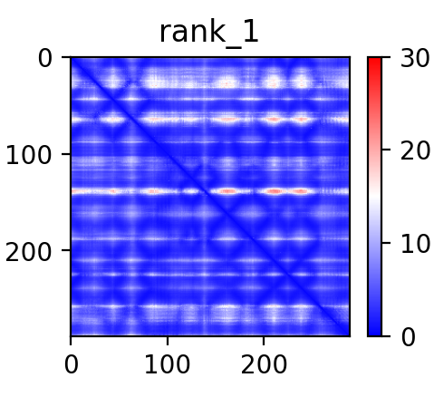
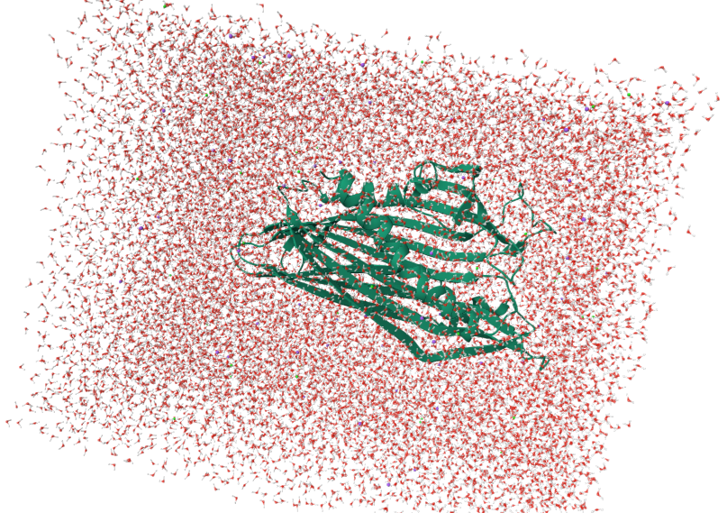
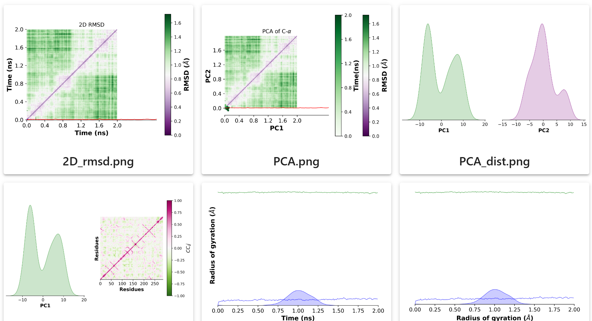
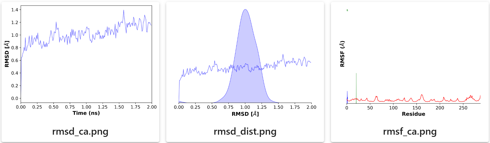

Project Overview
Our team conducted a semi-rational redesign of proteins containing the START domain.
This structural molecular biology research forms the academic and methodology cornerstone of Yefarm's CADD and protein structure-based virtual screening workflows.
Molecular Evolution & Domain Conservation
We investigated the molecular evolution of the START domain by constructing a phylogenetic tree. Multiple sequence alignment revealed an RMSD score of 0.154, indicating high structural conservation across species.

START Domain Phylogenetic Tree

Alignment & RMSD = 0.154
Redesign Pipeline & Scaffold Generation
Based on phylogenetic analysis, five representative protein structures were selected for semi-rational design. The START domain is a conserved protein module critical for lipid binding and transport, cellular signaling, and sterol metabolism.

Native redesign was performed by excising the START domain from well-characterized proteins, specifically CERT1 (Homo sapiens), using an automated script in Open Source PyMOL. Watch the full process walkthrough on YouTube ↗.
Using the online tool P2Rank, binding sites with high scores were identified. Conserved regions were protected, and RFdiffusion was applied to generate a hydrophilic scaffold around the conserved lipid-binding core, facilitating cloning in prokaryotic hosts.
The generated structure initially lacked a biologically justified amino acid sequence (poly-glycine stretches). ProteinMPNN was utilized to convert the PDB structural nodes into a 2D graph, and subsequently back to a FASTA sequence file.
The FASTA sequences were resolved using AlphaFold 2, selecting the best structural variant based on a pTM score of 0.9, confirming high solubility and folding stability.


Docking & Molecular Dynamics Simulations
Docking of the modified CERT1 protein (post-redesign) with 2-[4-[3-tert-butyl-5-(2-pyridin-2-ylethyl)phenyl]phenyl]sulfonylethanol (9N3, compound B5) was performed using CB-Dock2 and compared to the native protein-ligand complex.

The modified protein exhibited a higher number of residues participating in ligand interactions with a distinct binding pocket on the 3D surface, validating its capacity to adapt conformationally to compound B5.

To assess structural integrity and stability, molecular dynamics simulations were conducted for 0.2 nanoseconds under human physiological conditions using OpenMM.


